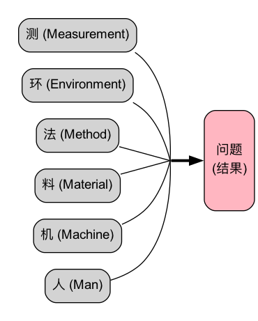

鱼骨图（石川图）分析法教程¶
1. 什么是鱼骨图？¶
鱼骨图（Fishbone Diagram），又称石川图（Ishikawa Diagram） 或因果图（Cause-and-Effect Diagram），是一种经典的问题分析工具，用于系统性地识别、组织和展示导致某一特定问题（结果）的多种潜在原因。
它由日本质量管理专家石川馨博士在20世纪60年代提出，因其形状酷似鱼的骨架而得名。鱼头代表“结果”（问题），而鱼骨则代表导致该结果的各种“原因”。
2. 为什么使用鱼骨图？¶
鱼骨图的主要价值在于：
- 结构化思考：提供一个清晰的框架，帮助团队从多个维度系统地思考问题的所有可能原因。
- 可视化分析：将复杂的原因关系以直观的图形方式呈现，便于团队成员理解和讨论。
- 促进团队协作：非常适合用于头脑风暴会议，能够汇集团队的集体智慧，从不同视角发掘原因。
- 识别根本原因：通过对主要原因的进一步细化，可以帮助团队深入挖掘问题的根本所在。
3. 鱼骨图的结构¶
一个典型的鱼骨图包含以下几个核心部分：
- 鱼头（Head）：指向右侧，代表需要分析的问题或结果（Effect）。
- 鱼脊（Spine）：一条从鱼头向左延伸的水平主干线。
- 大骨（Main Bones）：从鱼脊上斜向延伸出的几条主要分支，代表原因的主要类别（Categories）。
- 中骨/小骨（Sub-Branches）：从大骨上延伸出的更小分支，代表每个类别下的具体原因。
常见的主要原因分类（大骨）¶
根据分析对象的不同，大骨的分类可以灵活调整。以下是一些经典的分类模型：
- 制造业（6M模型）：
- Manpower (人): 操作人员的技能、经验、态度等。
- 方法 (方法): 工作流程、操作规范、工艺参数等。
- Machine (机器): 设备、工具的状态、精度、维护等。
- Material (材料): 原材料的质量、规格、供应商等。
- Measurement (测量): 测量工具、检验标准、数据准确性等。
-
Milieu/Mother Nature (环境): 工作场所的温度、湿度、光线、文化氛围等。
-
服务业（4S或8P模型）：
-
Suppliers (供应商)
-
Systems (系统)
-
Skills (技能)
-
Surroundings (环境)
-
市场营销（8P模型）：
-
Product (产品)
-
Price (价格)
-
Place (渠道)
-
Promotion (促销)
-
People (人员)
-
流程 (过程)
-
Physical Evidence (物理环境)
-
Productivity & Quality (生产力与质量)
4. 如何绘制和使用鱼骨图？¶
步骤一：确定问题（鱼头）¶
- 明确问题：首先，清晰、具体地定义要分析的问题。例如，“本季度客户满意度下降15%”。
- 绘制鱼头：在白板或纸张的右侧画一个方框，写下这个问题，并从方框向左画一条水平的鱼脊。
步骤二：确定原因的主要类别（大骨）¶
- 选择分类模型：根据问题的性质，选择一个合适的分类模型（如制造业的6M）。
- 绘制大骨：在鱼脊的上下两侧，画出几条斜线作为大骨，并在每条大骨的末端标上类别名称（如“人”、“机器”、“方法”等）。
步骤三：进行头脑风暴，找出具体原因（中骨/小骨）¶
- 团队讨论：召集相关团队成员，围绕每个主要类别进行头脑风暴。
- 提问引导：可以结合五问法（5 Whys），不断追问“为什么会这样？”来探究深层原因。
- 例如，在“人”这个大骨下，可以问：“为什么操作员会出错？” -> “因为培训不足。” -> “为什么培训不足？” -> “因为没有标准化的培训教材。”
- 绘制中骨/小骨：将讨论出的具体原因作为中骨或小骨，连接到相应的大骨上。
步骤四：分析和确定关键原因¶
- 审阅鱼骨图：当所有可能的原因都被列出后，团队一起审阅整个图表。
- 识别关键原因：通过讨论、投票或简单的数据验证，找出那些对问题影响最大、最有可能的关键原因（或根本原因）。用圆圈或星号标记它们。
步骤五：制定改进措施¶
- 制定行动计划：针对识别出的关键原因，制定具体、可行的改进措施和行动计划。
5. 实践案例：分析“软件编译时间过长”¶

分析与结论： 通过上图分析，团队可能发现“构建服务器配置低”、“未使用增量编译”和“模块间循环依赖”是影响最大的三个关键原因，并据此制定相应的硬件升级和技术重构计划。
鱼骨图是一个灵活而强大的工具，它鼓励全面思考，帮助团队在复杂的局面中理清思路，找到解决问题的有效路径。